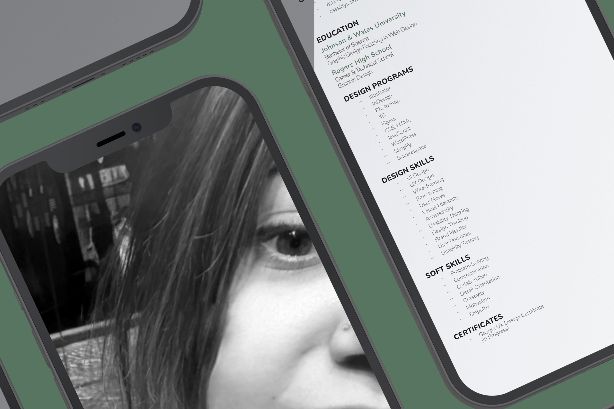
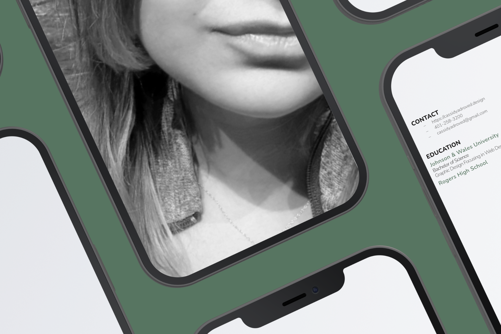

hello
Hi, I’m Cassidy Adroved
UX/UI & Brand Designer
I design clean, thoughtful digital experiences that bring together UX, visual design, and front-end development.
View My Work
My Work
Work across UX/UI design, brand identity, and front-end development.
My work focuses on creating clear, usable, and visually consistent experiences. Whether I’m designing an interface, building a brand, or coding a responsive site, I care about the details that make a project feel polished and easy to use.
Ux/UI Design
Designing clear, usable digital experiences.
Brand Design
Building recognizable identities with personality and consistency.
HTML, CSS, & Javascript
Turning design ideas into functional, responsive websites.
UX/UI design, brand design, and front-end development all shape how a project feels and functions. I enjoy working across these areas because each one adds something important to the final experience. UX helps make the work usable, branding gives it personality, and code brings it to life. For me, the goal is always to create work that feels clear, consistent, and intentional.


My Branding
This website reflects the way I approach design. I created the layout, typography, color palette, interactions, and front-end build myself, with every detail chosen intentionally. My logo is personal to me: it represents growth and the different stages of finding my direction as a designer. The flower shape reflects where I started, the moments when I felt lost, and the process of building myself back into something stronger.